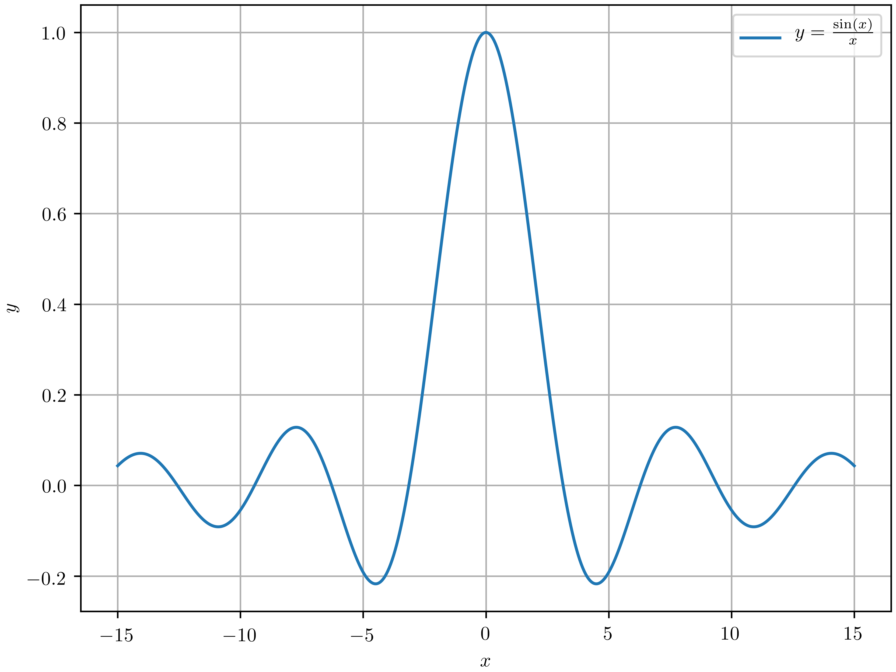

5 Languages in 30 minutes 1/5: Python
1 Introduction
1.1 Why series?
- Short
- Interesting?
- Broaden horizon
- Stackoverflow developer survey 2019
2 Python
2.1 Why Python?
- TIOBE Hall of Fame 2018
- TIOBE Index \(4^{th}\)
- SO most loved \(2^{nd}\)
- SO most wanted \(1^{st}\)
- Dutch origins
2.2 What is Python
- Interpreted
- Multi-paradigm:
- Imperative
- Object oriented
- Functional
- Aspect oriented
- Metaprogramming
- Strongly, dynamically typed
- Garbage collected
- Scripting language
- Batteries included
- Significant whitespace
- Easily extendable
- Embeddable
2.3 Implementations
- CPython
- Jython (on the JVM)
- IronPython (on .NET)
- PyPy (fast, JIT compiled)
- Stackless (microthreads)
- MicroPython (running on microcontrollers)
2.4 History
- Born: 1990
- Amsterdam (CWI)
- Guido van Rossum
- Goals:
- It should be an easy and intuitive language, just as powerful as major competitors.
- It should be open source, so anyone can contribute to its development.
- Its code should be understandable as plain English.
- It should be suitable for everyday tasks, allowing for short development times.Readabillity
- 16 October 2000: Python 2.0
- 3 December 2008: Python 3.0
- current:
- 3.7.3
- 2.7.16
2.5 The Zen of Python
- Beautiful is better than ugly
- Explicit is better than implicit
- Simple is better than complex
- Complex is better than complicated
- Readability counts
…
2.6 In Practice (1/2)
- REPL: Read Eval Print Loop
- python version manager: pyenv (anaconda)
- package manager: pip (176,172 packages)
- very large standard library included:
http server
python -m SimpleHTTPServer 8000
smtp server
python -m smtpd -n -c DebuggingServer 127.0.0.1:10025
- csv parser
- fractions
- asyncio
- unittest
- doctest
- very portable (Windows, MacOS, Linux, BSD's)
2.7 In Practice (2/2)
- PEP: Python Enhancement Proposal
- Documentation: doc strings, Sphinx
- IDE's:
- PyCharm (Jetbrains)
- IDLE (included)
- every decent editor
- also for GUI's:
- PyQt
- PyGtk
- WxPython
- cloud:
- one of the original google cloud platform languages
- available on AWS, and Azure
2.8 Notable features
- Multiple assignment
- Slices
2.9 Notable libraries
2.10 Notable libraries
- Matplotlib
import matplotlib.pyplot as plt import numpy as np plt.rc('text', usetex=True) plt.rc('font', family='sans serif') x = np.linspace(-15, 15, 500) plt.xlabel(r'$x$') plt.ylabel(r'$y$') plt.plot(x, np.sin(x)/x, label=r'$y = \frac{\sin (x)}{x}$') plt.grid(True) axis = plt.gca() axis.legend() plt.tight_layout(0) plt.savefig('images/python-matplot-fig.png', dpi=600)
2.11 Result

2.12 Notable libraries
- Scikit-Learn (Machine learning)
- TensorFlow (Machine learning)
- Gym (Reinforcement learning)
- Django (CMS)
- Flask (Web framework)
- Twisted (event-driven network programming)
2.13 Usages
- Scientific computing
- Extension language
- GIMP
- Inkscape
- GNU Debugger
- Blender
- Web Apps
- Machine learning
- Installer (Ubiquity, Anaconda)
- Software development:
- SCons
- Buildbot
- robotframework
- cookiecutter
2.14 Rusty washers
- Performance, options
- use native libraries if needed
- PyPy
- 2.x vs 3.x
2.15 Resources
- Python.org
- Official documentation
- Python Package Index
- Sphinx documentation generator
- Anaconda scientific computing distribution
- Python Beginners Guide
- Python Programming Wikibook
- Pluralsight courses
- IPython, better REPL
- Thonny beginner freindly IDE
- PyCharm Jetbrains IDE
- Spyder Scientific Development Environment
- Python using VS Code
- Jupyter Notebooks